拖动滑块对照同尺寸的设计原稿与真实 Vue 页面。三栏图按「原稿、修复前、修复后」排列。
基线沿用 design/ 的 HTML、CSS、JS。仅在“我的”参考图中移除了已确认不实现的原型状态演示卡；未经调整的原稿截图单独保留。ECharts 与原稿 SVG 的字体及抗锯齿可能产生少量像素差异。
查看完整差异清单和验证记录 · 进入本地 Vue 工作台预览
像素差异：0.950% → 0.000%（单通道差值大于 24）
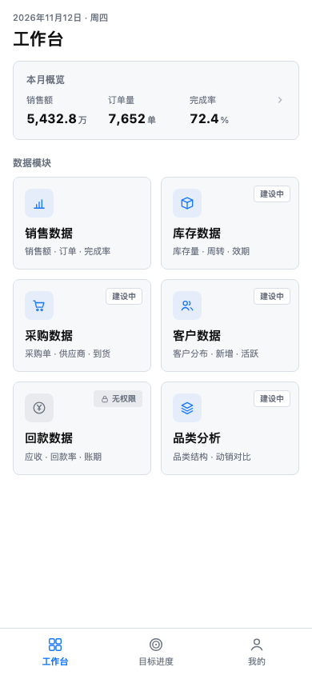
下载三栏对照图像素差异图未修改的原稿截图打开 Vue 页面
像素差异：2.632% → 0.925%（单通道差值大于 24）
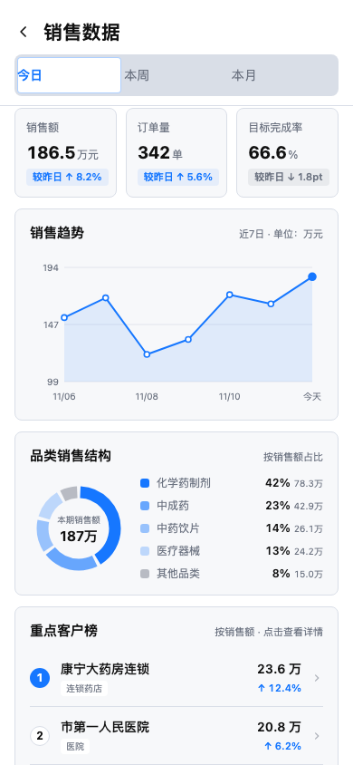
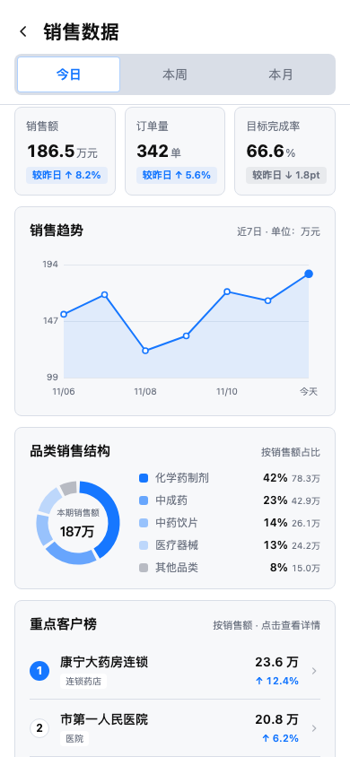
像素差异：3.777% → 0.022%（单通道差值大于 24）
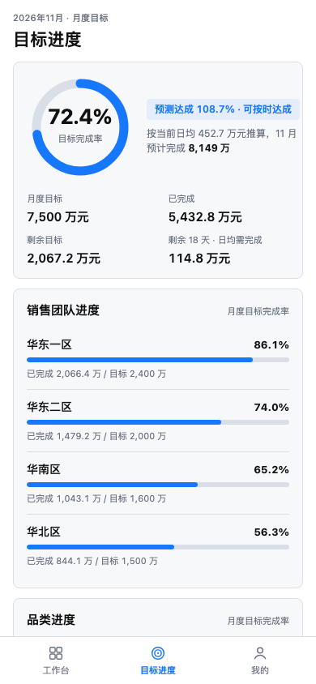
像素差异：1.192% → 0.000%（单通道差值大于 24）
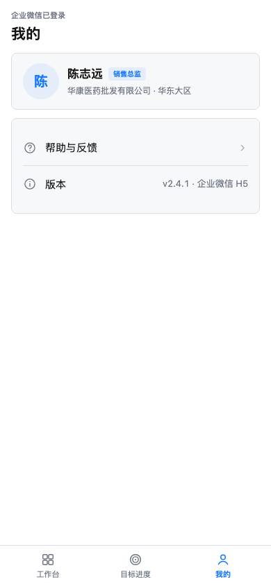
像素差异：0.302% → 0.000%（单通道差值大于 24）
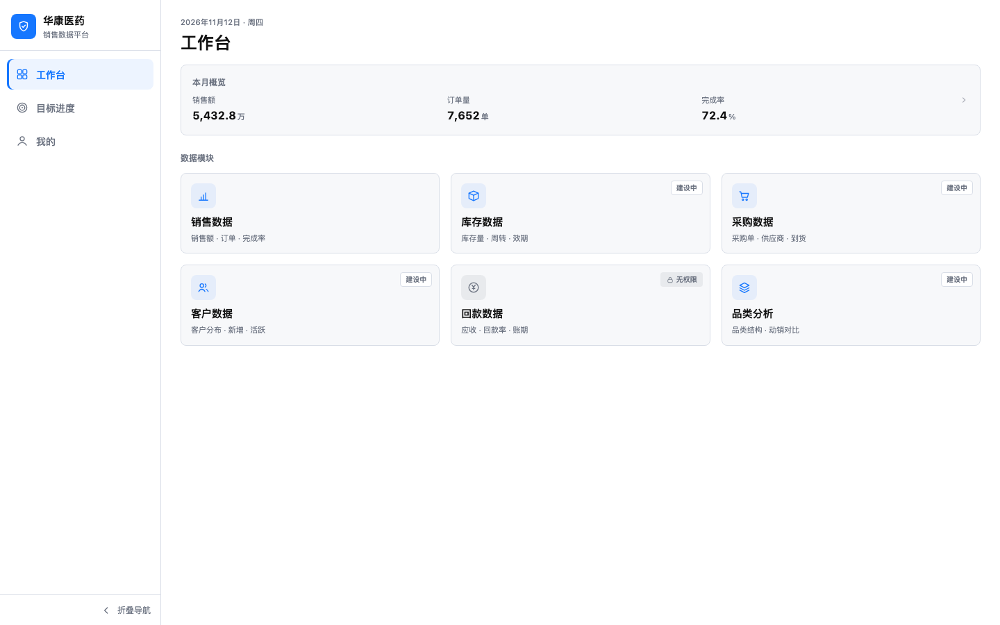
像素差异：2.196% → 0.309%（单通道差值大于 24）
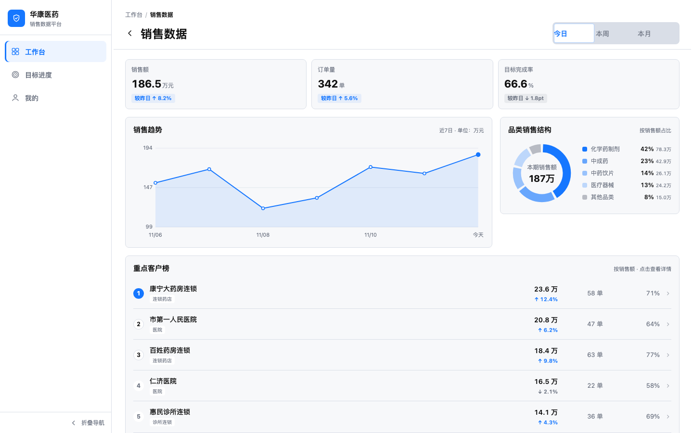
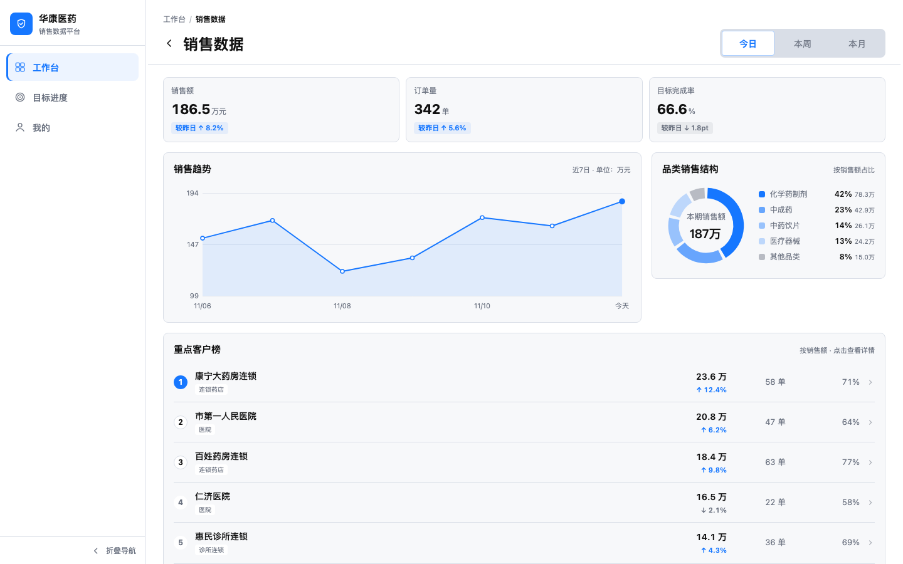
像素差异：0.683% → 0.009%（单通道差值大于 24）
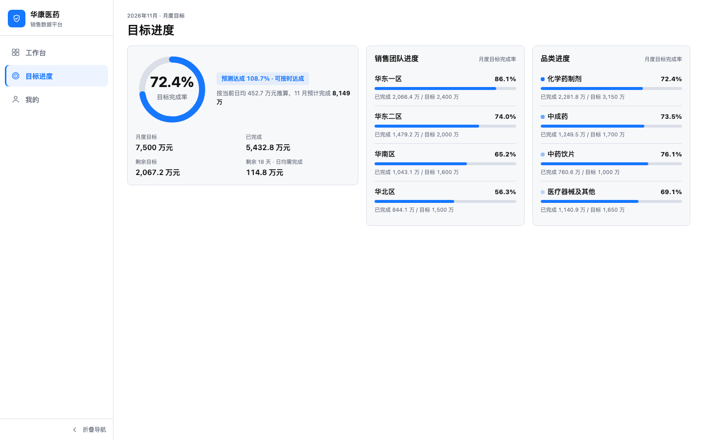
像素差异：0.356% → 0.000%（单通道差值大于 24）
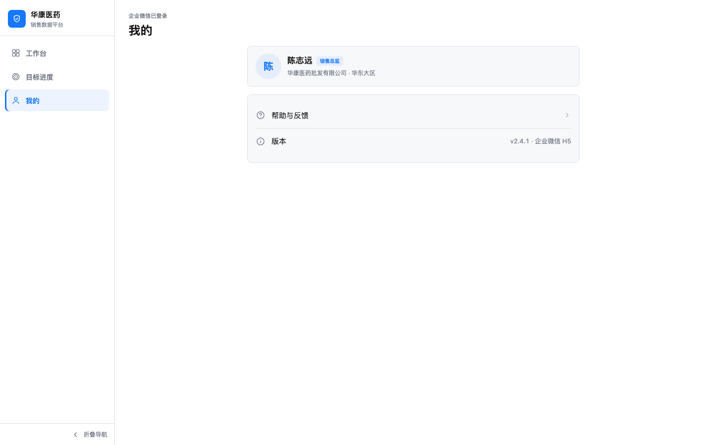
像素差异：8.991% → 5.440%（单通道差值大于 24）
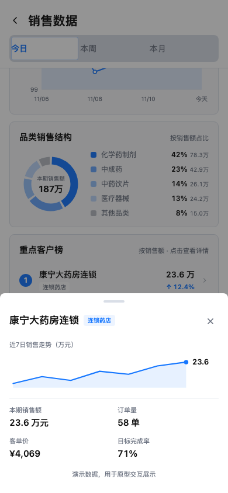
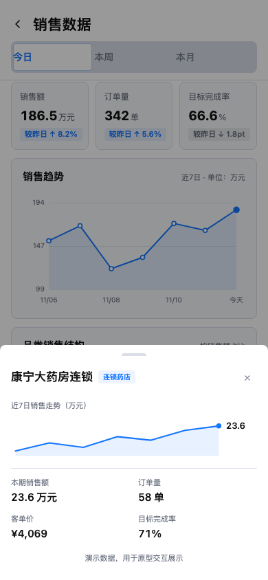
像素差异：4.992% → 3.713%（单通道差值大于 24）
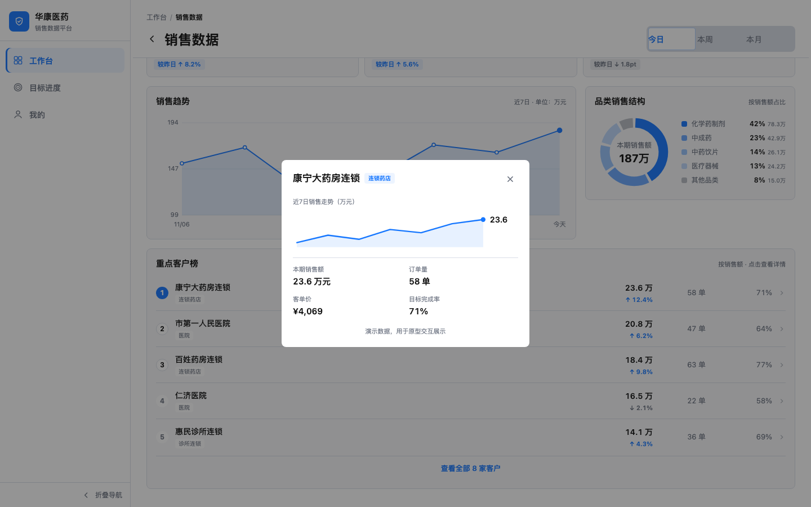
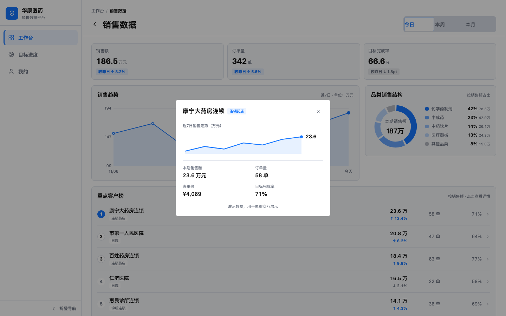